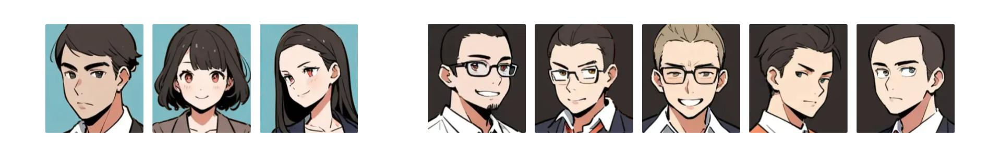

あけましておめでとうございます。今年もよろしくお願いいたします。
令和 7 年の年賀問題を作りました。
ストーリーがついていますが、これは純粋にフレーバーテキストであり、急いでいる方は末尾の赤い文字の部分だけ読んでも差し支えはありません。
今年の冬休みは 9 連休です。
帰省したあなたは、高校時代の友人に呼び出されて、スタートアップ企業の採用説明を聞いています。
友人と言っても、最近はすっかりネットでのつながりになってしまい、実際に会うのは数年ぶりです。もしかすると、前に会ったときは、まだ二人とも学生だったかもしれません。
「今日は来てくれてありがとう」
そう言って友人は、あなたをファミレスのソファー席に通しました。
テーブルの正面に座ると、友人の姿に懐かしさを覚えます。服装のセンスは昔のままだけれど、髪型は変わっていて、仕草や振る舞いの端々にもどことなく社会人らしさを感じます。それが、なんだか自分のよく知っている友人像とは合わない気がして、少し可笑しくもなりました。
「さっそく、会社の話なんだけど」
あらかじめ聞いていたとおり、友人は会社の採用説明を始めました。
説明によると、某社は新進気鋭のスタートアップであり、現在のところ、営業職 3 名と開発職 5 名のあわせて 8 名の社員がいます。

採用の特徴として、求人サイトは一切使わず、採用経路をリファラル（既存社員による推薦）に限定しているのだそうです。
「1 人は創業者だから除いて、残りの 7 人はみんな、リファラルで入社したんだよ」
しかも、人材の偏りを避けるため、推薦する社員は必ず自分と異なる職種（営業職→開発職、開発職→営業職）でなければならないというルールがあるそうです。
「たとえば、私は営業職だから、推薦するなら開発職っていうわけなんだけど…」
友人はそう言って、ちょっとだけ視線を切りました。
「開発ってよくわからないから、うちの開発部長に『どんな人が理想の人物なんですか？』って聞いてみたの。そうしたら、聞けば聞くほど、あっそういう人、私の友達に一人だけいるぞ？って思ってね」
友人は、それで矢も盾もたまらず、年始のスケジュールを調整してあなたに会う時間を作ったのだと言います。
友人は、知っているあなたのエピソードを、開発部長の言葉と照らし合わせながら、あなたがいかに理想的な人物であるかを力説してくれました。
一しきり語ると、思い出したようにオレンジジュースで口を潤しながら、友人は間を取ります。
「もちろん、あくまでも『興味があれば』なんだけど。……どうかな？」
ずっと前のめりだった友人が、ここで急に遠慮がちになったので、その引き腰に釣られたかのように、あなたは「ちょっと興味はある」と答えました。
すると、友人は嬉しそうに一枚のメモを取り出し、「ありがとう！」と言いながら、ガサガサとそれを広げます。
「その場合はね、開発部長からメッセージを預かってるんだ。読むね。えーと……」
読み終わると、友人はメッセージの紙をテーブルに置いて、あなたが読みやすい向きに直しました。
余白がずいぶん大きいのは、計算用紙ということなのでしょう。
「飲み物取ってくるね。何がいい？」
あなたは「アイスコーヒー」と告げて、ドリンクバーに向かう友人を見送ると、バッグからボールペンを取り出し、考察を始めることにしました。
なお、内容はフィクションであり、実在の人物や会社等とは一切関係ありません。
解説は、別記事にて後日掲載します。よかったら Atom フィード をフォローください。